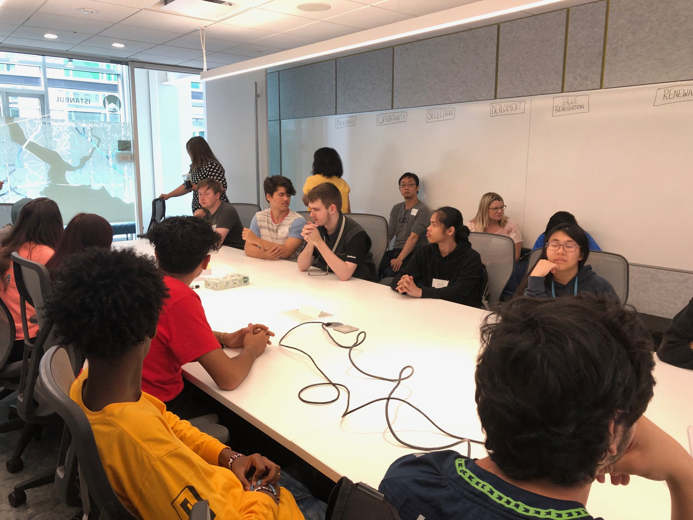
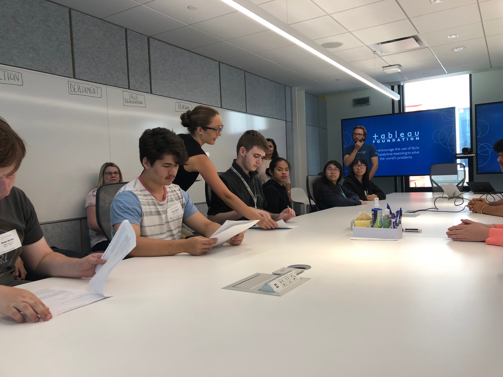
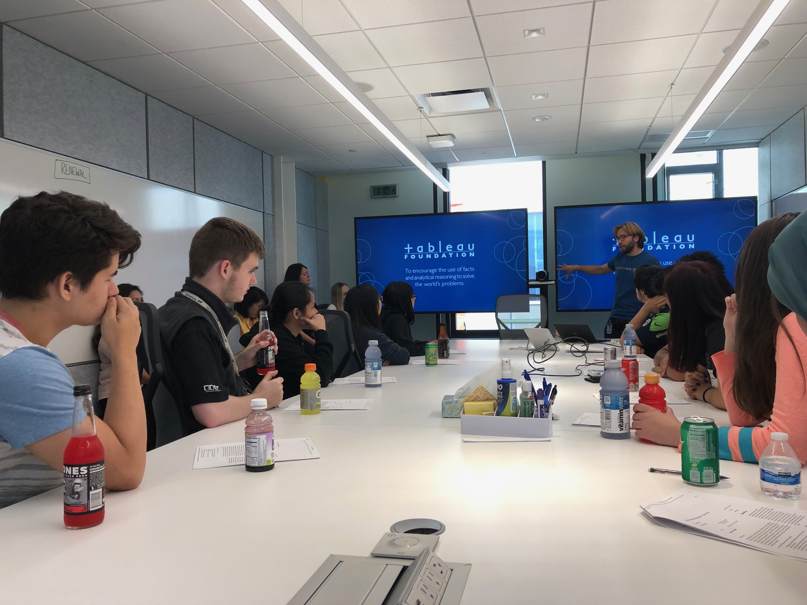
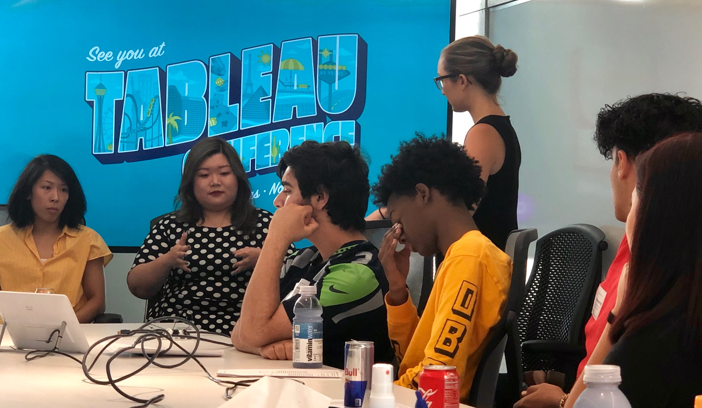

RecTech/Digital Skills For All Students Go To Tableau July 2019
Our visit to Tableau led began in a meeting room as exceptional employees started their allocution about their interesting work at tableau! It was absolutely interesting to hear that their product is so much more than making than making money, getting costomers, and simply getting on with the day. When we arrived and had the opportunity to hear about the workers it suddenly became more than a visit and Tableau became more than just a quickly growing company, there was a comforting atmosphere when listening to their stories. They werent afraid to tell you the truth because they know someone in the room could be in the shoes they were, and they genuinely sound like honest people that you can trust!
While we were at Tableau they told us about how they've donated millions, and how their objective is to make peoples lives easier through their product. They then procceded to lead us to their glorious kitchen and alluring view from the rooftop( I even spotted a flamingo boat)!





